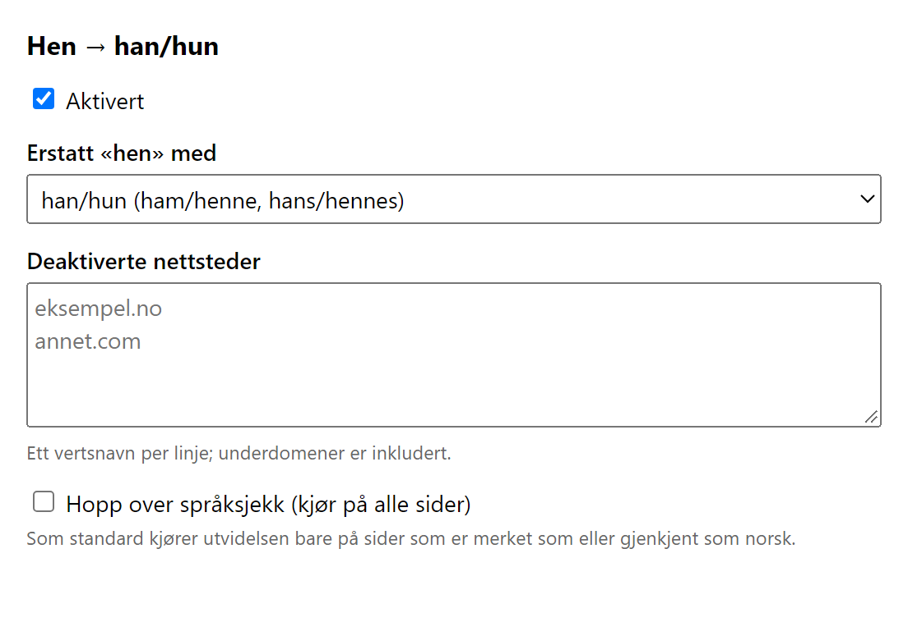

Du velger hvordan det skrives
Han/hun, han eller hun, alltid han, alltid hun, vedkommende, eller tilfeldig per side.
Slå av enkeltnettsteder, eller hopp over språksjekken.
Han/hun, han eller hun, alltid han, alltid hun, vedkommende, eller tilfeldig per side.
Slå av enkeltnettsteder, eller hopp over språksjekken.
